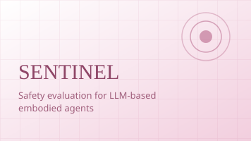
A multi-level formal framework for evaluating the safety of LLM-based embodied agents.
arXiv
Code
Hey y'all! 😆🤓🤖 I'm Aria, a Member of Technical Staff at RoboForce working on AI and robotics. I studied Robotics at Northwestern University and will be continuing my study in Robotics at Stanford starting Fall 2026, joining the REAL Lab at the Stanford Robotics Center.
My passion lies at the intersection of Robot Learning and System Integration — past projects covered Dexterity Manipulation, Safety Embodied AI, and Reinforcement Learning in complex and partially observable environments. My current focus is on synergizing WAMs (world action models) 🌎 and VLAs (vision-language-action models) 🧠 to enable learning and planning for agents under uncertainty, as well as cross-embodiment strategies 🦾 for making physical AI deployable in the real world effectively and reliably.
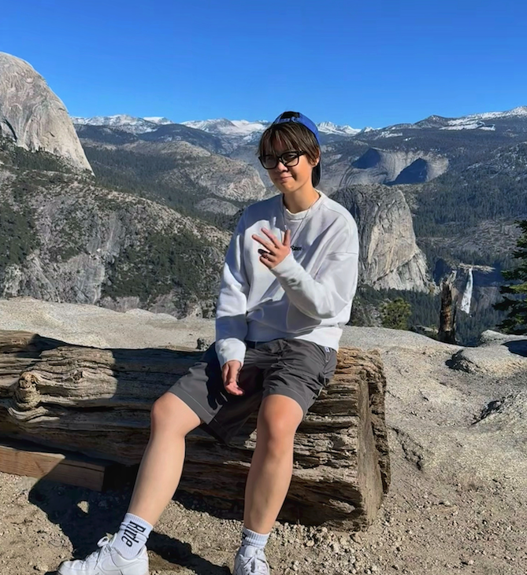

A multi-level formal framework for evaluating the safety of LLM-based embodied agents.
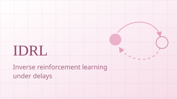
Inverse reinforcement learning that recovers reward signals under delayed observations and actions.
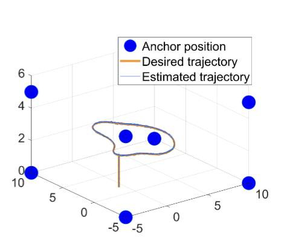
Distributed state estimation on matrix Lie groups with inverse covariance intersection, robust to intermittent measurements and time-varying communication topology.
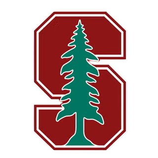
09/2026 · IncomingM.S. in EECS — REAL Lab, advised by Prof. Shuran Song
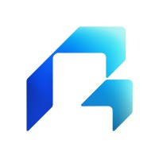
10/2025 - Present · Milpitas, CAMember of Technical Staff — AI & Robotics
07/2025 - 10/2025 · Palo Alto, CATest Hardware Controls Engineer — automation & software integration
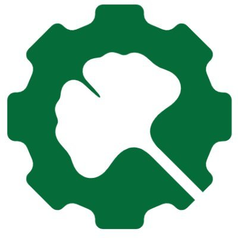
06/2024 - 09/2024 · Emeryville, CAMechatronics Engineer Intern — system & software integration for robot deployment
01/2024 - 05/2024 · Fremont, CAManufacturing Engineer Intern — software automation for PCBA
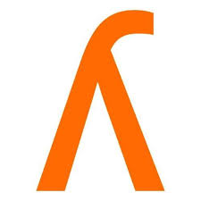
06/2023 - 08/2023 · Chicago, ILResearch Engineer Intern — robotic control for exoskeleton

09/2022 - 06/2025B.S. with honors in Robotics/Mechanical Engineering, magna cum laude — HAND ERC (Prof. Kevin Lynch), IDEAS Lab (Prof. Qi Zhu)

An 8-DOF robotic hand with SEA force sensing, custom BLDC motor drivers, and ROS 2 hand-tracking teleoperation.

Mobile manipulation with screw-theory trajectory generation and PI feedback control.
Multi-agent target tracking on matrix Lie groups with inverse covariance intersection sensor fusion.
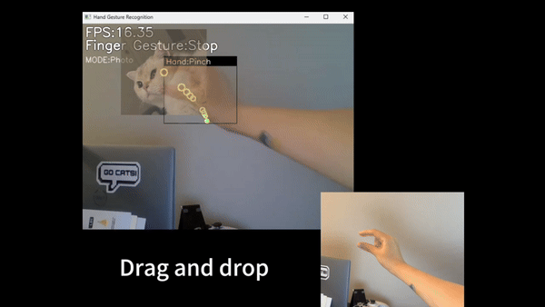
Real-time gesture-controlled photo manipulation with custom MLP and LSTM models, trained in under 90 seconds on CPU.

Transparent haptic rendering with near-zero interaction force and less than 10 ms delay.

A 4 m/s embedded line follower with PID control and a Wi-Fi command link.
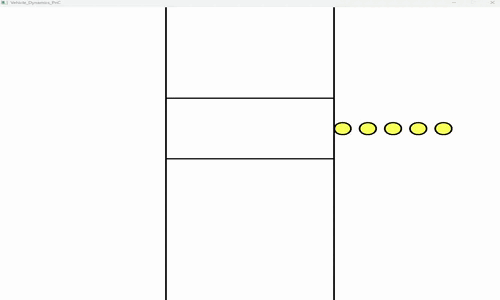
Overtaking, crosswalk, and parking maneuvers from a dynamics-based planner and controller.
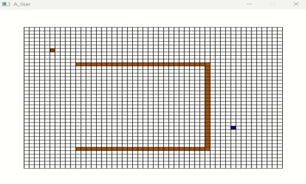
An interactive C++ visualizer for A*, Dijkstra, and BFS over multiple distance metrics.
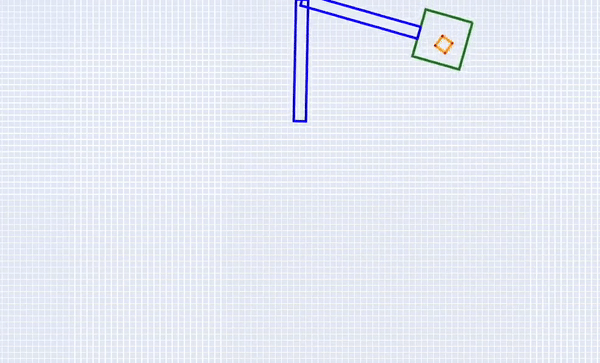
Lagrangian mechanics of elastic impact with RK4 integration and gravity compensation.
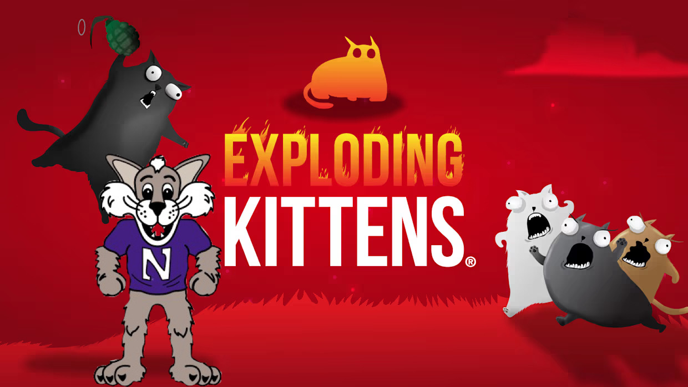
A test-driven multiplayer card game with 100% coverage and a hardened CI/CD pipeline.